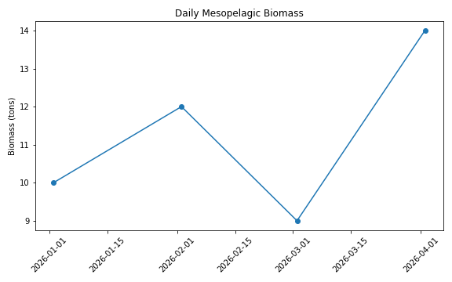
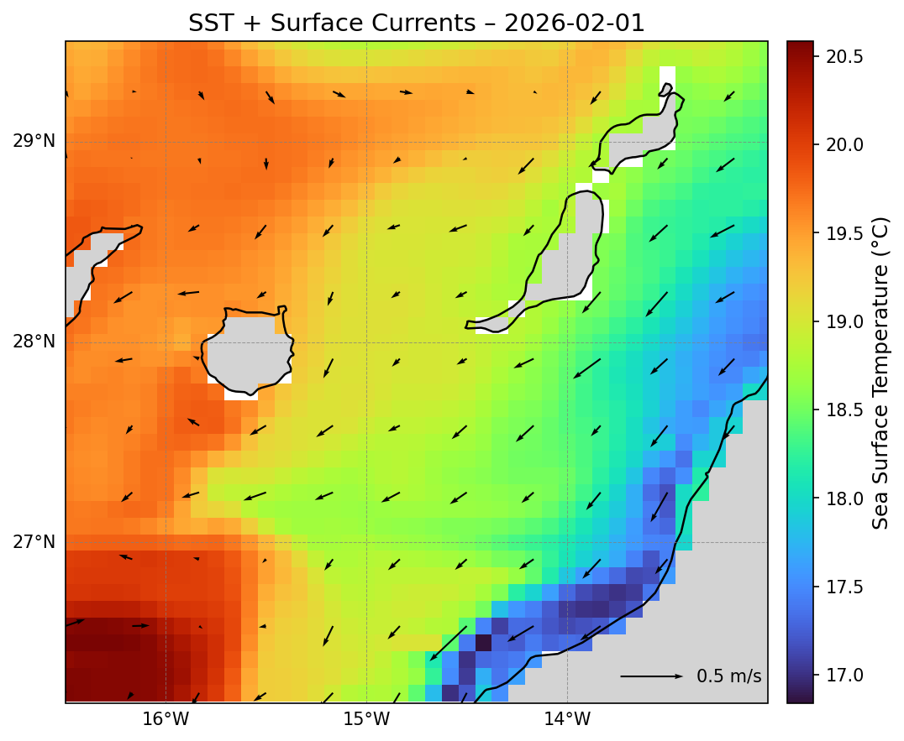

About the Project
The mesopelagic ecosystem (the zone extending between 200 and 1000 meters in depth) contains one of the largest concentrations of animal biomass on the planet, mostly composed of fish. These so-called “lantern” or mesopelagic fishes are considered the most abundant vertebrates in the biosphere, playing a fundamental role in marine food webs and in the vertical transport of organic matter, facilitating carbon sequestration in the ocean depths. Thanks to their daily vertical migrations, they act as key intermediaries in the flow of energy and nutrients between ocean layers, while also accumulating pollutants such as microplastics and heavy metals, whose ecological and human health effects remain poorly understood. Their role in the ecosystem is both relevant and enigmatic, as despite their importance, mesopelagic fishes remain one of the least known groups in the ocean.
Various studies have estimated that their global biomass could exceed 1,000 million tons, sparking growing international interest in their commercial exploitation as an alternative source of marine protein, fishmeal, oils for aquaculture, or dietary supplements. This emerging pressure highlights the urgent need for a comprehensive scientific understanding of their ecological functions, vulnerability to fishing, and regenerative potential.

In this context, the MESOFISH project was launched, proposing a multidisciplinary, long-term evaluation of the functional ecology of mesopelagic fishes in the northeastern Atlantic, with a particular focus on the Canary Islands. Unlike previous studies, which were spatially or temporally limited, MESOFISH adopts a continuous and seasonal approach through monthly sampling campaigns over an entire year. This design will allow, for the first time in this region, capturing the seasonal variability of key ecological and physiological processes in response to factors such as temperature, primary productivity, and ocean current dynamics.
A central pillar of the project is understanding how climate change and anthropogenic pollution—two of the greatest environmental challenges of our era—affect these organisms, which are considered vectors of the biological carbon pump, as they can transport carbon to the deep ocean through their daily migrations and metabolic processes. Therefore, studying their physiology, ecology, and resilience has direct implications for climate change mitigation and the sustainability of deep-sea ecosystems.
Project Team

Dr. Airam N. Sarmiento Lezcano
Project Coordinator
Affiliation: Instituto Español de Oceanografía (IEO-CSIC), Spain
Email: airam.sarmiento@ieo.csic.es

Dr. Santiago Hernández León
Principal Investigator
Affiliation: University of Las Palmas de Gran Canaria, Spain
Email: shernandezleon@ulpgc.es
Dr. María José Caballero Cansino
Co-director
Affiliation: University of Las Palmas de Gran Canaria, Spain
Email: mariajose.caballero@ulpgc.es
Dr. Antonio Domínguez Brito
Investigator
Affiliation: University of Las Palmas de Gran Canaria, Spain
Email: antonio.dominguez@ulpgc.es
Figures
Daily biomass of mesopelagic fishes:

Daily SST + Surface Currents:

Open Data
Download the dataset: biomass.csv